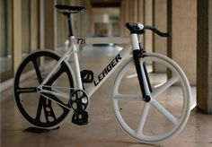
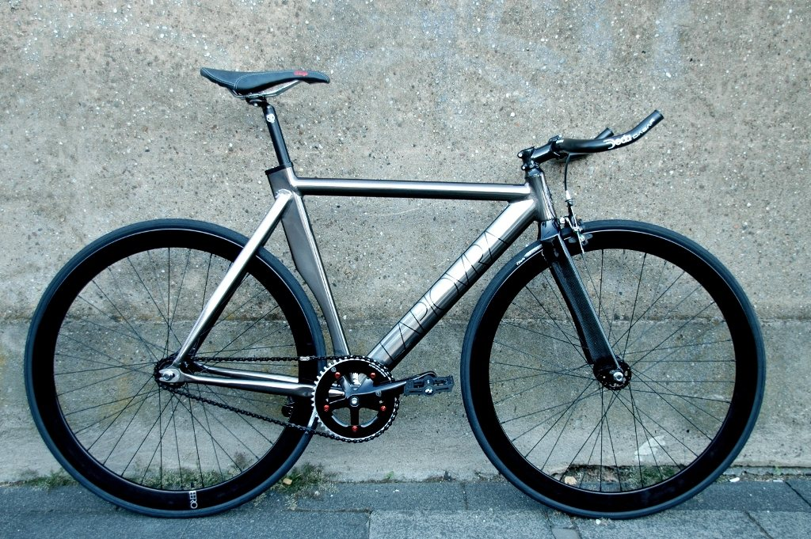
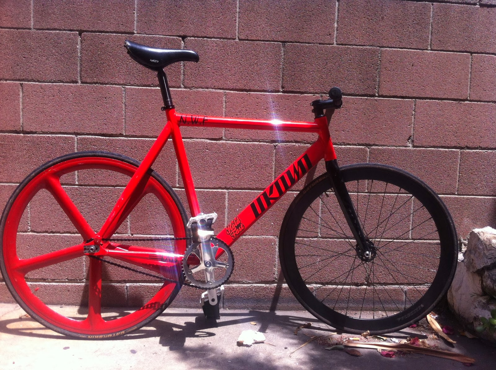
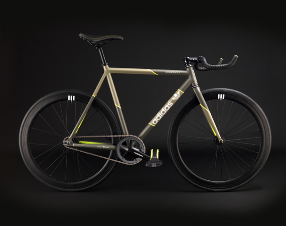

The oldest and simplest type of bicycle is the "fixed-gear" bicycle. This is a single-speed bicycle: that is, whenever the bike is in motion, the pedals will go around. You cannot coast on a fixed-gear machine. Many track bicycle enthusiastic cyclists ride such bicycles by choice, at least part of the time. Why would anybody do that? It is not easy to put into words. There is an almost mystical connection between a fixed-gear cyclist and bicycle: it feels like an extension of your body to a greater extent than does a freewheel-equipped machine. If you are an enthusiastic, vigorous cyclist, you really should give it a try.
Fixed gear bicycles are mostly known for their customization. These types of bikes can be vibrant and color-ful. Most people grow a attachment to fixed gear bikes because it has personality that can represent the rider. This bike has a different option for braking. You must use your legs to resist the force in order to "skid" to a stop.
Reasons you want a fixed gear bicycle: Intensive workout(You must pedal through all terrains with one gear), Customizable(A bike that speaks to you), Nimble(You can feel the ground with every pedal) Requires no maintenace(Has only one gear to maintain). Reasons you may not want a fixed gear bicycle: It has one gear(this makes it difficult to climb hills and reach high speeds going downhill)
   